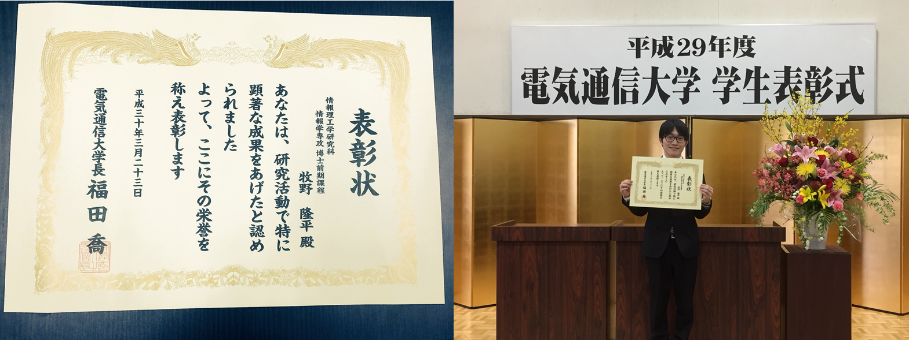
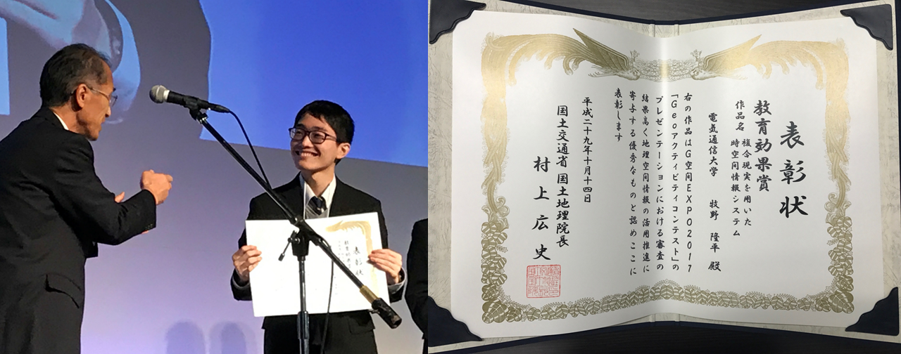
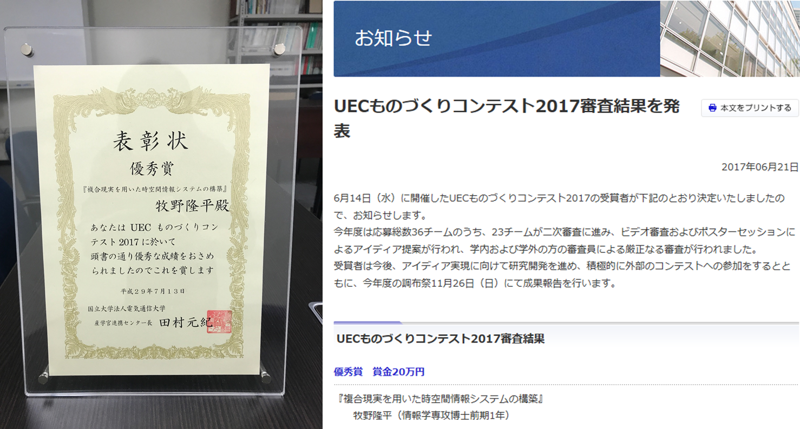
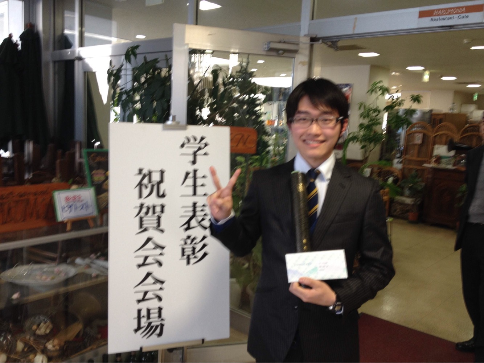

受賞歴4：学長賞 受賞(電気通信大学:2018年3月)
（2018年3月） 毎年、研究活動において著しい成果を上げた人に贈られる、学長賞を受賞した。
受賞歴3：Geoアクティビティコンテスト2017 教育効果賞 受賞(国土交通省国土地理院主催 G空間EXPO 日本科学未来館:2017年11月)
2017年10月12日（木）から14日（土）にお台場の日本科学未来館において、G空間EXPO2017（Geospatial EXPO 2017 Japan）が開催された。
これは、地理空間情報高度活用社会（G空間社会）の実現へ向けて、産学官が連携し、地理空間情報と衛星測位の利活用を推進する場として、2010年から開催されている。
3日目の13日（金）のメインステージプログラムの「Geoアクティビティコンテスト」に出場し、「複合現実を用いた時空間情報システム」と題するプレゼンテーションを行った。
このコンテストには、産官学を問わず多くの応募があり、予備審査を通過した16組のみ、G空間EXPOでの本審査に進むことができる。学生の本審査出場は珍しい例である。
翌14日（土）のメインステージプログラムの表彰式で、教育効果賞を受賞した。この賞は、地理空間情報に関する教育に多大な貢献が期待できる応募者に授与される賞である。
受賞歴2：UECものづくりコンテスト2017 優秀賞 受賞(電気通信大学:2017年6月)
（2017年6月） 応募総数36チームのうち、23チームが二次審査に進み、ビデオ審査およびポスターセッションによるアイディア提案が行われ、学内および学外の方の審査員による厳正なる審査が行われ、優秀賞（優勝）を受賞した。
受賞歴1：社会貢献賞 受賞(電気通信大学:2014年3月)
調布市全域の小学校の代表生徒を集めて、理科・科学実験の補助ボランティアを約一年行った。特に、上野の国立科学博物館引率では、小学生達に展示物の紹介を行った。
その活動が大学に伝わり、卒業式の日に社会貢献部門で社会貢献賞を授与された。